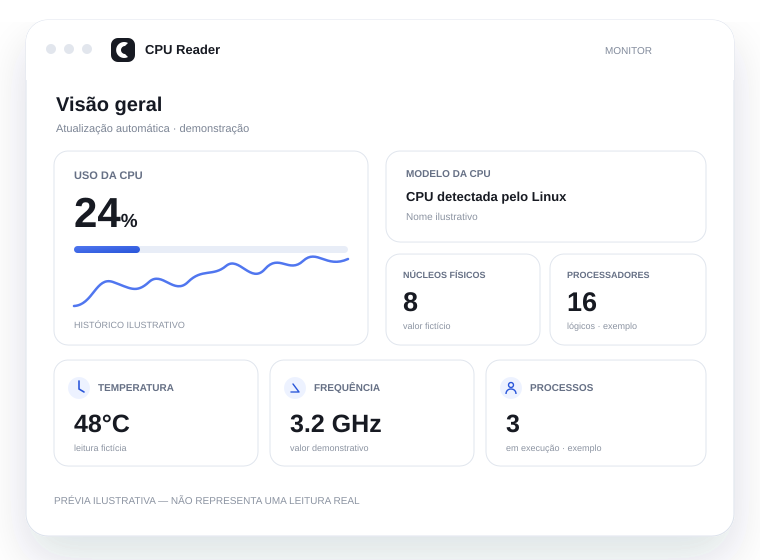

Uso agregado
Calcula a utilização da CPU comparando amostras sucessivas de /proc/stat.
C99 · Linux · Código aberto
Uma biblioteca C leve e um monitor desktop para acompanhar uso, topologia, temperatura e frequência — quando o sistema disponibiliza essas métricas.

Prévia ilustrativa · valores demonstrativos, não são leituras reais
FEITO PARA LINUX
O CPU Reader lê interfaces do kernel e trata sensores opcionais como opcionais. Quando um dado não existe, ele deve aparecer como indisponível — não como zero.
Calcula a utilização da CPU comparando amostras sucessivas de /proc/stat.
Mostra modelo, núcleos físicos identificados e processadores lógicos visíveis ao sistema.
Consulta temperatura e frequência quando drivers e interfaces do sistema fornecem leituras.
Integre a biblioteca em aplicações Linux sem adicionar dependência de interface gráfica ao núcleo.
TUTORIAL RÁPIDO
Compile o pacote, instale-o e abra o monitor. Os comandos são executados no terminal do Debian ou Ubuntu.
Abrir tutorial completo ↗sudo apt update
sudo apt install git build-essential pkg-config libgtk-4-dev dpkg-devgit clone https://github.com/mnl-nox/cpu-reader.git
cd cpu-reader
make package-debsudo apt install ./build/cpu-reader_*.deb
cpu-readercpu-reader --version
cpu-reader --help
make testINSTALAÇÃO
O pacote Debian é o caminho mais direto para abrir o aplicativo. A biblioteca também pode ser compilada separadamente.
Monitor gráfico com atualização periódica e integração ao menu de aplicativos.
.deb localCompile somente o núcleo se pretende integrar a API em outro programa.
include/cpu.hlibcpu.aImportante: um pacote gerado localmente ou baixado de um artefato temporário do CI não é uma release estável. Consulte a página de releases antes de usar em ambientes críticos.
DOCUMENTAÇÃO
Guias curtos para começar e documentos técnicos para entender a implementação.
CPU READER
Explore o código, confira os testes e contribua com melhorias.